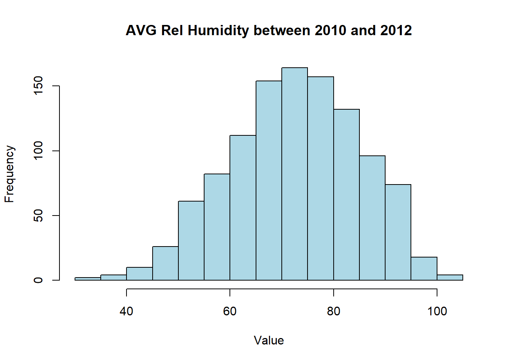

# <<cache=F, fig.width=6, fig.height=4>>=
# install.packages("tidyverse")
library(tidyverse)
library(dplyr)
library(magrittr)2 Chapter 0: Introduction to R
2.1 Section 1: Getting Started With R
R is an integrated suite of software facilities for data manipulation, calculation and graphical display. Among other things it has
an effective data handling and storage facility,
a suite of operators for calculations on arrays, in particular matrices,
a large, coherent, integrated collection of intermediate tools for data analysis,
graphical facilities for data analysis and display either directly at the computer or on hard copy, and a well developed, simple and effective programming language (called ‘S’) which includes conditionals,
loops, user defined recursive functions and input and output facilities. (Indeed most of the system supplied functions are themselves written in the S language.)
The term “environment” is intended to characterize it as a fully planned and coherent system, rather than an incremental accretion of very specific and inflexible tools, as is frequently the case with other data analysis software. R is very much a vehicle for newly developing methods of interactive data analysis. It has developed rapidly, and has been extended by a large collection of packages. However, most programs written in R are essentially ephemeral, written for a single piece of data analysis.
2.1.1 Environment Setup
Before you start, you want to do these 3 things first:
Install R R is a programming language
Install RStudio RStudio is the most widely-used IDE for R
Install tidyverse tidyverse is the collection of packages that are widely used for data analysis. The detailed introduction to tidyverse can be found in Section 1.2. You can use the below command in R to install tidyverse
The pipe operator
The %>% operator, also known as the “pipe operator”, is a powerful feature introduced by the
magrittrpackage in R. It allows for a more readable and concise way of chaining together multiple function calls or operations. The pipe operator facilitates the creation of efficient and streamlined data analysis pipelines.# Using pipe operator to integrate commands example <- data.frame(x = c(1, 2, 3, 4, 5), y = c(2, 4, 6, 8, 10)) # Calculate the mean of y for rows where x is greater than 2 mean_y <- example %>% subset(x > 2) %>% pull(y) %>% mean() # Print the mean print(mean_y)
2.2 Section 2. Read/Load/Output Data
Read data from local files, load data from online source, write data into local files.
2.2.1 Read Data
# Load text file
data <- read.csv("data/CMI_TRH.csv")
head(data, 5) X year month day avg_rel_hum avg_air_temp_f avg_air_temp_c date_string
1 1 1989 2 16 87.7 26.6 -3.0000000 1989-2-16
2 2 1989 2 17 89.4 26.4 -3.1111111 1989-2-17
3 3 1989 2 18 88.0 27.1 -2.7222222 1989-2-18
4 4 1989 2 19 96.7 32.5 0.2777778 1989-2-19
5 5 1989 2 20 100.0 34.5 1.3888889 1989-2-20
date
1 1989-02-16
2 1989-02-17
3 1989-02-18
4 1989-02-19
5 1989-02-202.3 Plots and Graphics
2.3.1 Basic Plots
The built-in plot function in R allows you to create scatter plots, line charts and other common graphics for statistical analysis.
scatter plot
library(tidyverse)── Attaching core tidyverse packages ──────────────────────── tidyverse 2.0.0 ──
✔ dplyr 1.1.4 ✔ readr 2.1.5
✔ forcats 1.0.0 ✔ stringr 1.5.0
✔ ggplot2 3.4.1 ✔ tibble 3.2.1
✔ lubridate 1.9.2 ✔ tidyr 1.3.0
✔ purrr 1.0.1
── Conflicts ────────────────────────────────────────── tidyverse_conflicts() ──
✖ dplyr::filter() masks stats::filter()
✖ dplyr::lag() masks stats::lag()
ℹ Use the conflicted package (<http://conflicted.r-lib.org/>) to force all conflicts to become errorslibrary(dplyr)
library(magrittr)
Attaching package: 'magrittr'
The following object is masked from 'package:purrr':
set_names
The following object is masked from 'package:tidyr':
extract# Select average humidity and date
data_between_2010_2012 <- data %>%
filter(year >= 2010 & year <= 2012)
# Create a scatter plot
plot(data_between_2010_2012$avg_rel_hum, data_between_2010_2012$avg_air_temp_c, main = "AVG Rel Humidity VS. AVG Rel Temperature in C, between 2010-2012", xlab = "X", ylab = "Y", pch = 16, col = "blue")
histogram and bar plot
# Create a histogram
hist(data_between_2010_2012$avg_rel_hum, main = "AVG Rel Humidity between 2010 and 2012", xlab = "Value", ylab = "Frequency", col = "lightblue")